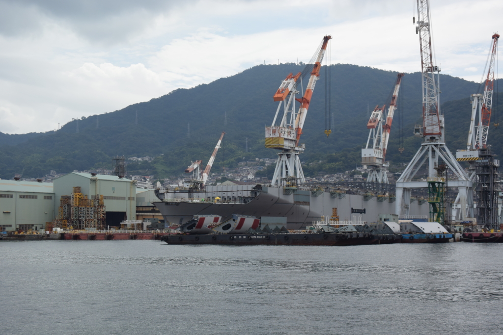

呉に行ってきたった：2日目 呉艦船めぐり
執筆日時：
呉2日目は、いつもより早めに起床（いつもはチェックアウト時間ぎりぎりまで寝てるパターン）。呉艦船めぐりにでかける。
自衛隊の OB の方が呉港を案内してくださるのだそう。自衛隊にはまったく詳しくないのだけど、呉には第4護衛隊群（第4護衛隊・第8護衛隊）、第1輸送隊、第1潜水隊群などがいるみたいで、ヘリ搭載護衛艦「いせ」（※空母ではない）や「そうりゅう」型の潜水艦、運がよければ輸送艦「おおすみ」なんかが見られるっぽい。
料金は大人1,300円。所要時間は30分ほどで、横須賀の軍港めぐり（約1時間）にくらべると短いけれど、港が小さいせいか濃度は2倍。いろいろ見られて満足だった。
それでは出発。デカいクレーンが林立している。
ちょっとズームすると、「大和のふるさと」と書かれたドックが見える。あれが「大和」んちか！ 手前の護衛艦は DD-158「うみぎり」。艤装が外されてるッぽいけど、改修中なのかな？
ちょっといくと、DDH-182「いせ」がいる。デカい。第4護衛隊群第4護衛隊の旗艦で、「いずも」「かが」ができるまでは一番大きな護衛艦だった。今でもフツーにデカいけれど。
隣に座っている DD-106「さみだれ」と比べると、ケツのデカさがよく分かる。
潜水艦救難艦「ちはや」（ASR-403）。「潜水艦が浮かんでこれなくなった！」みたいなヤバいときに頑張るマン。
よくわからんけど、このあたりのどこかに DSRV（深海救難艇）を備えていて、沈んだ潜水艦から乗員を助けられるようになっているっぽい。あと、現場へ一刻も早く到着しなければならないということで、高速巡航能力が高いらしい。まぁ、「到着したころにはみんな窒息死してました」じゃ意味ないしなぁ。あと、荒天でも DSRV を運用するための能力なんかも付与されてる。
ちなみに、潜水艦を持ってる国は多いけれど、潜水艦救難艦を備える国はそんなに多くないみたいで。潜水艦が沈んだらどうするんやろね……。
「ちはや」の奥には、潜水艦がたくさんいる。なんか水をブシャーッって吐いてるのは、バッテリーの充電中なんだそうな。日本の潜水艦は作戦前にこうやってディーゼル機関（か何か）で前もってバッテリーを充電しておき、作戦中はその電気で動く。やる気になればずっと潜っていられる原子力潜水艦に比べるとちょっと不便だけど、静粛性に優れるという利点があり、一長一短っていったところみたい（『沈黙の艦隊』の受け売りやけどな！）。
んで、尾っぽが V の字型になっているのが、新しい「そうりゅう」型。あとで知ったのだけど、船尾は X 型になっていて、V なのは浮いてる部分だけなんだな。従来の十字型だと、回頭を担当する垂直舵（縦舵）と姿勢制御を担当する水平舵（横舵）が役割分担する形になるが、この X 型はそれぞれが双方を兼ね備えていて機動性に優れるのだそうだ。また、1枚欠けても大丈夫（冗長性がある）だったり、着底するときに舵が海底に接触しにくいというメリットもあるらしい。欠点は制御がめんどいらしいってこと（計算機がやってくれるんだけど！）と、十字型より大きくなりがちってこと。まぁ、図体デカいから、舵が大きいのも多少はね？
自分が見たときは、ちょうど魚雷の積み下ろし作業（？）をやっていた。ごあんぜんに！
ボートの奥に、「せとゆき」「しらゆき」の練習艦コンビ。
お尻が半開きになっている輸送艦「おおすみ」。ここから戦車のっけたホバークラフトなんかがでてくるんだっけ。
世界各国の災害支援に奔走している頑張り屋さんなのに、漁船の体当たりを受けちゃったりする可哀想な子。
おなじく護衛艦隊第1輸送隊の輸送艦「しもきた」（LST-4002）。お隣は護衛艦「とね」（DE-234、第12護衛隊）。
掃海艇「いずしま」。磁気機雷にひっかからないように、自衛艦には珍しく木で作られている。
機雷を除去する掃海は、海上自衛隊の本分でもありますからね！ 掃海については、次に行った「てつのくじら館」がとてもお勉強になった。
説明にはなかったけど、米陸軍の艦艇も発見。上陸用舟艇ってやつなのかな。

建造中のタンカーなんかもいた。ブロック工法っていうのかな？ 部品をペタペタくっつけてる感がある。
もうちょっと晴れてたらなーとか、クソッ、望遠レンズもっていけばよかった！ と思ったりとか、まぁ、残念なところもあったけど、面白かったしまた行きたいかも。